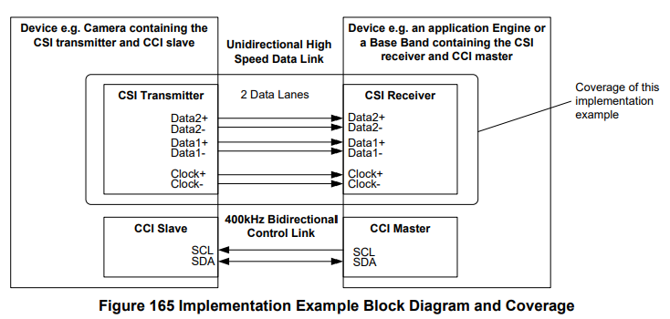
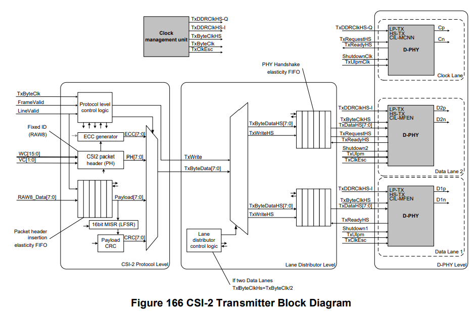
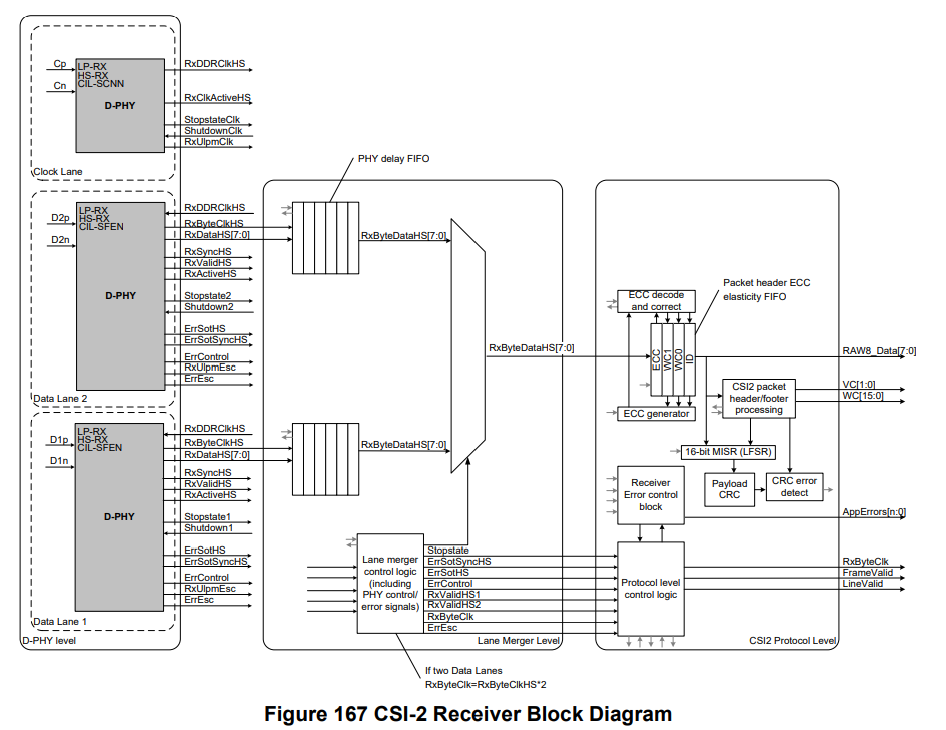
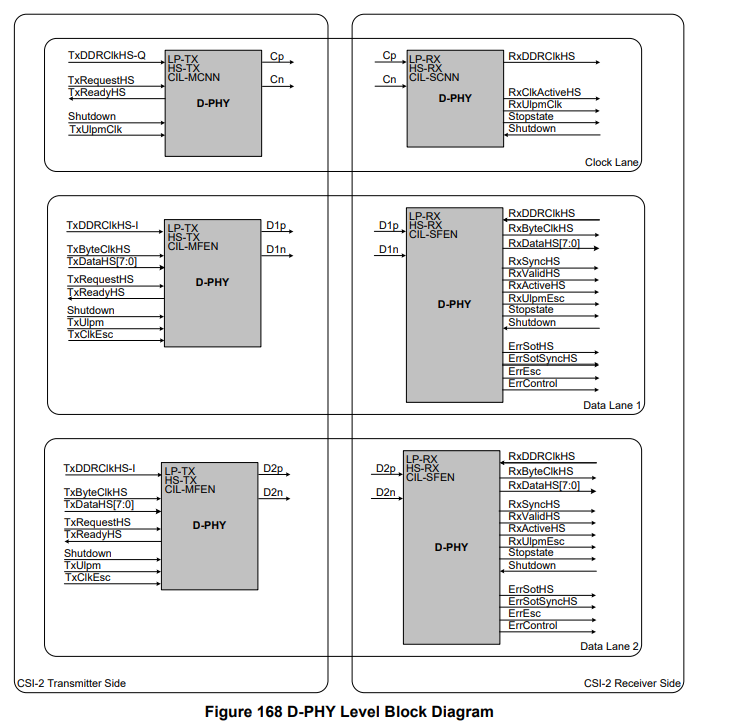
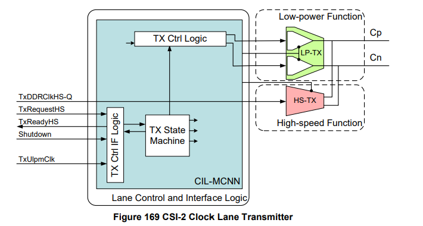
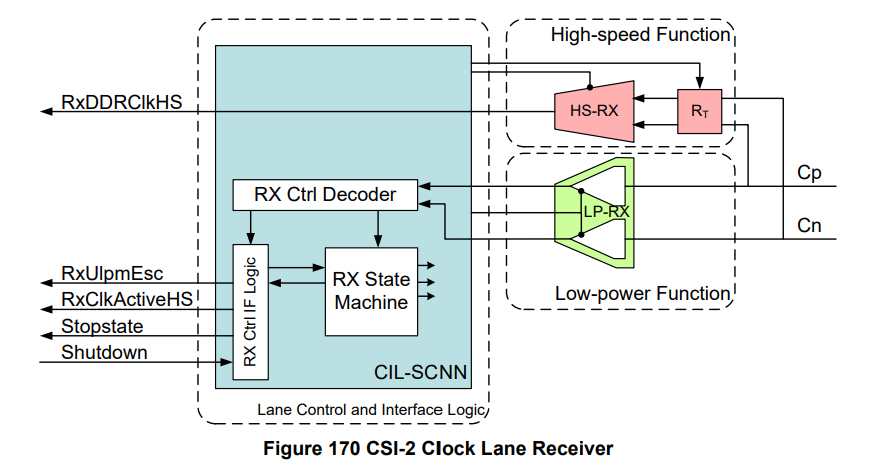
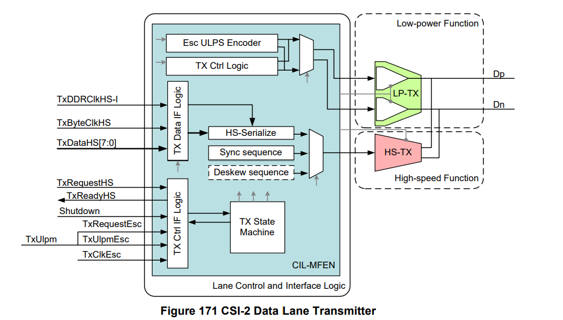
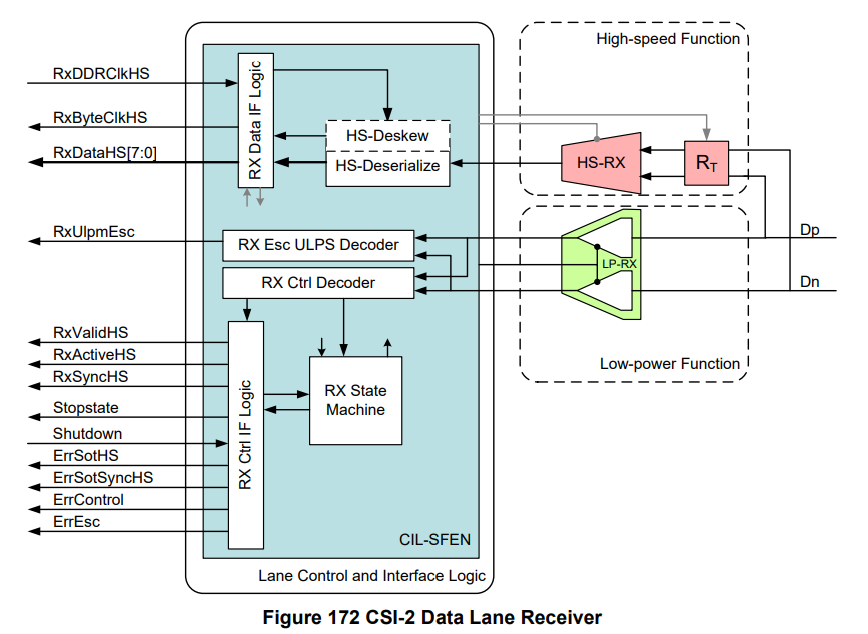

MIPI-CSI-5
本文最后更新于：2024年5月4日 下午
- 本节主要介绍 CSI-2 的实现案例
1. 概述
假设物理层为D-PHY，实现框图如下图所示。
 实现案例没有展示错误恢复机制和错误处理细节相关内容，主要从数据流向进行介绍。
实现案例中传输的数据为RAW8格式，其不需要完成Pixel 和 Byte 转换的打包和解包过程。
2. CSI-2 Transmitter Detailed Block Diagram
其框图如下图所示。
主要包括三部分：（1）协议层（2）Lane 分发层 （3）D-PHY 物理层

3. CSI-2 Receiver Detailed Block Diagram
其框图如下图所示。
同样包括三部分：（1）协议层（2）Lane 合并层 （3）D-PHY 物理层

4. D-PHY 物理层 实现细节
D-PHY接口如下图所示。
 - 图中左侧为CSI-2 发送端输出，从上至下分别为 Clock Lane、Data1 Lane、Data2 Lane。
- 图中右侧为CSI-2 接收端输出，从上至下分别为 Clock Lane、Data1 Lane、Data2 Lane。
4.1 CSI-2 Clock Lane Transmitter
其框架如下图所示。
 图中主要包含三部分
- LP-TX，用于低功耗功能（Low-power function）。
- HS-TX，用于高速功能（High-speed function）。
- CIL-MCNN，用于Lane控制和接口逻辑。
与LLP Layer的PPI接口有：
- TxDDRClkHS-Q（Input）：高速传输DDR时钟（Quadrature）信号。
- TxRequestHS（Input）：高速传输Request信号。此信号高有效，用来让Lane模块开始传输HS时钟。
- TxReadyHS（Output）：高速传输Ready信号。此信号高有效，用来指示时钟Lane在传输HS时钟。
- Shutdown（Input）：关闭Lane模块。此信号高有效，用来强制Lane模块进入“shutdown”，禁用所有活动。
- 当Shutdown为高时，所有PPI输入信号都会被忽略，并且所有PPI输出都会被驱动到默认的无效状态。
- Shutdown是电平触发信号，不依赖于任何时钟。
- TxUlpmClk（Input）：时钟Lane上的Transmit Ultra Low-Power Mode信号。
- 此信号高有效，会让时钟Lane模块进入Ultra Low-Power模式。
- Lane模块会保持这种极低功耗状态，直到TxUlpmClk被置为无效。
4.2 CSI-2 Clock Lane Receiver
其框架如下图所示。
 其主要包含三个部分：
- LP-RX，用于低功耗功能（Low-power function）。
- HS-RX，用于高速功能（High-speed function）。
- CIL-MCNN，用于Lane控制和接口逻辑。
与LLP Layer的PPI接口有：
- RxDDRClkHS（Output）：高速接收DDR时钟信号，用来采样所有数据lane中的数据
- RxClkActiveHS（Output）：高速接收有效信号（High-Speed Reception Active）。此信号高有效，用来指示时钟Lane正在接收有效时钟。该信号是异步的。
- Stopstate（Output）：Lane是否处于Stop状态。此信号高有效，用来指示Lane模块当前是否处于Stop状态。该信号是异步的。
- Shutdown（Input）：关闭Lane模块。此信号高有效，用来强制Lane模块进入“shutdown”，禁用所有活动。与Transmitter端相同。
- RxUlpmEsc（Output）：Escape Ultra Low Power（Recieve）模式。
- 此信号高有效，用来指示Lane模块是否已经进入到了Ultral Low Power模式。
- Lane模块会在此信号有效时保持这种模式，直到再次检测到了一个Stop state。
4.3 CSI-2 Data Lane Transmitter
其框架如下图所示。
 其主要包含三个部分：
- LP-RX，用于低功耗功能（Low-power function）。
- HS-RX，用于高速功能（High-speed function）。
- CIL-MFEN，用于Lane控制和接口逻辑。
- 对于可选的 去斜(deskew) 校准功能，数据Lane会发送一个Deskew Sequence进行校正。
与LLP Layer的PPI接口有：
- TxDDRClkHS-I（Input）：高速发送DDR时钟（同相位，in-phase）。
- TxByteClkHS（Input）：高速发送Byte时钟。用来同步高速传输时钟域里的PPI信号。
- 建议在传输数据通道模块中共享一个TxByteClkHS信号。
- TxByteClkHS的频率必须恰好是 high-speed bit rate 的1/8。
- TxDataHS[7:0]（Input）：高速发送Data信号。要发送的8 bit高速数据。
- TxRequestHS（Input）：高速发送Request信号。
- TxRequestHS的一次低到高的转换会让Lane模块发起一个Start-of-Transmission序列。
- TxRequestHS一次高到低的转换会让Lane模块发起一个End-of-Transmission序列。
- 此信号高有效，高电平时指示LLP正通过 TxByteDataHS 接口发送有效数据。
- 在TxByteClkHS的时钟上升沿上，当TxRequestHS和TxReadyHS同时有效时，Lane模块会接受（accept）数据。
- 协议总是在TxRequestHS有效的时候提供合法的发送数据。一旦被置为有效，TxRequestHS会保持高电平，直到所有数据都被接受（accpet）了。
- TxReadyHS（Output）：高速发送Ready信号。
- 此信号高有效，用来指示TxDataHS被Lane模块所接受（accepted）即将会被串行发送出去。
- TxReadyHS在TxByteClkHS的上升沿采样有效。
- Shutown（Input）：关闭Lane模块。此信号高有效，用来强制Lane模块进入“shutdown”。与前面介绍相同。
- TxUlpmEsc（Input）：Escape Mode Transmit Unltra Low Power。此信号高有效，和TxRequestEsc信号一起被置位，让Lane模块进入极低功耗（Ultra Low Power）模式。Lane模块会保持这种模式，直到TxRequestEsc被置为无效。
- TxRequestEsc（Input）：此信号高有效，和TxUlpmEsc一起被置位，用来请求进入到Escape Mode。一旦进入Esacape Mode， Lane会一直处于Escape Mode，直到TxRequestEsc被置为无效。TxRequestEsc只会在TxRequestHS为低的时候，被协议置位。
- TxClkEsc（Input）：Escape Mode Transmit Clock。这个时钟直接被用于产生escape序列。这个时钟的周期决定了低功耗信号的symbol time。
4.4 CSI-2 Data Lane Receiver
其框架如下图所示。
 其主要包含三个部分：
- LP-RX，用于低功耗功能（Low-power function）。
- HS-RX，用于高速功能（High-speed function）。
- CIL-SFEN，用于Lane控制和接口逻辑。
- 对于可选的 去斜(deskew) 校准功能，支持Deskew Pattern，对接收数据进行Deskew优化。
与LLP Layer的PPI接口有：
RxDDRClkHS（Input）：高速接收DDR时钟信号，用来采样所有数据lane中的数据。这个信号由CSI-2时钟Lane接收器所提供。
RxByteClkHS（Output）：高速接收Byte时钟信号。
- 此信号用来同步在高速接收时钟域内的信号。
- RxByteClkHS信号是通过接收到的RxDDRClkHS整除来产生的。
RxDataHS[7:0]（Output）：高速接收Data信号。Lane模块接收的8 bit高速数据。
- 连接到RxDataHS[0]的信号首先被接收(LSB 优先)。
- 数据在RxByteClkHS上升沿的时候被采样传输。
RxValidHS（Output）：高速接收Data Valid信号。
- 此信号高有效，用来指示Lane模块正在通过接口RxDataHS输出有效数据到LLP层。
- 协议层会在RxValidHS有效的时候，在每一个RxByteClkHS的时钟上升沿的时候去抓取RxDataHS信号。
- 协议没有提供降低接收数据速度的功能（throttle）。
RxActiveHS（Output）： 高速接收Active信号。此信号高有效，用来指示Lane模块正在从Lane中接收高速传输数据。
RxSyncHS（Output）：接收器监测 ”同步“ 信号。
- 此信号高有效，用来指示Lane模块已经监测到了一个正确的同步事件。
- 在一个典型的高速传输中，当RxActiveHS首次被置位时，一次高速传输的开始点，RxSyncHS会保持高电平，时间是一个RxByteClkHS周期。
- 这个信号被拉低，会用ErrSotSyncHS来报告。
RxUlpmEsc（Output）：Escape Ultra Low Power （Receive）模式，此信号高有效。
- 置位后用来指示Lane模块已经进入了极低功耗模式。
- Lane模块会保持在这种模式中，直到在Lane上检测到了一个StopState。
Stopstate（Output）：Lane处于Stop状态。此信号高有效，用来指示Lane模块正处于Stop状态。此信号是异步的。
Shutdown（Input）：关闭Lane模块。此信号高有效，用来强制Lane模块进入“shutdown”，与前面介绍相同。
ErrSotHS（Output）：Start-of-Transmission（SoT）Error信号。
- 如果高速SoT前导序列出错，但此时仍然能够达到适当的同步，这个错误信号置位的时间为RxByteClkHS的一个周期。这种错误被认为是前导序列的一个“软错误”，载荷数据的信任度会降低。
ErrSotSyncHS（Output）：Start-of-Transmission同步Error信号。
- 如果高速SoT前导序列出错，并且不能期望得到一个适当的同步。这个错误信号置位的时间为RxByteClkHS的一个周期。
ErrControl（Output）：控制错误。这个信号在一个错误的 line state sequence 被检测到时置位。
ErrEsc（Output）： Escape Entry Error。
- 如果接收到了一个无法识别的escape entry命令，这个信号会被置位，并且保持为高。
- 直到下一个line state变化发生。
- 接收器只有在ULPS模式下，支持的escape entry命令。